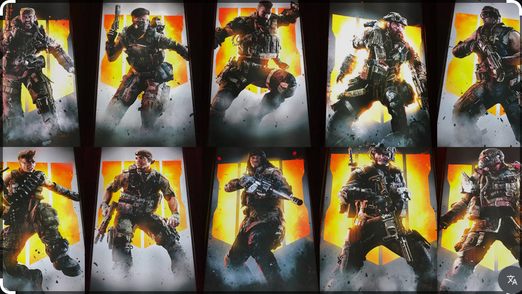

Learn more about our Call of Duty specialist gallery.
Our gallery showcases a curated collection of Call of Duty specialists from the Black Ops universe, highlighting their unique equipment, backgrounds, and roles within the game. Whether you're a fan of the franchise or a newcomer, our gallery provides an in-depth look at each specialist's characteristics, personality, and history.
As a longtime fan of the Call of Duty series, I wanted to build a gallery that celebrates the specialists from the Black Ops universe, characters whose unique personalities, equipment, and backstories often get overshadowed by fast-paced multiplayer action. I grew up playing this game, and it holds a lot of great memories from my younger years, which made this project feel personal rather than just an assignment. Building this gallery gave me a chance to slow down and highlight the deeper lore behind each specialist, even if one is only shown in this gallery fully.
The characters featured in this gallery are from the Call of Duty universe, specifically from the Black Ops universe. All character descriptions and equipment are based on their appearances in these officially licensed Call of Duty productions. Images are sourced from public stock photo services for demonstration purposes.

Image showing most of the specialists from Call of Duty: Black Ops 4. Image courtesy of public stock photo services.